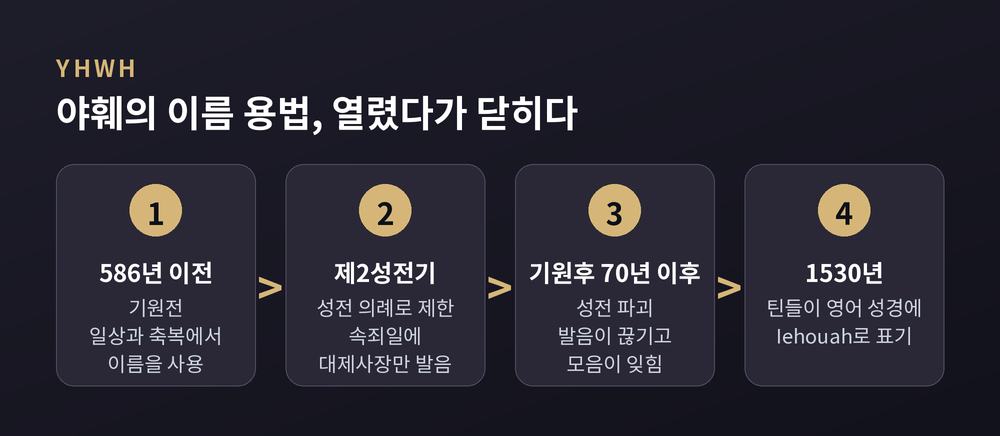
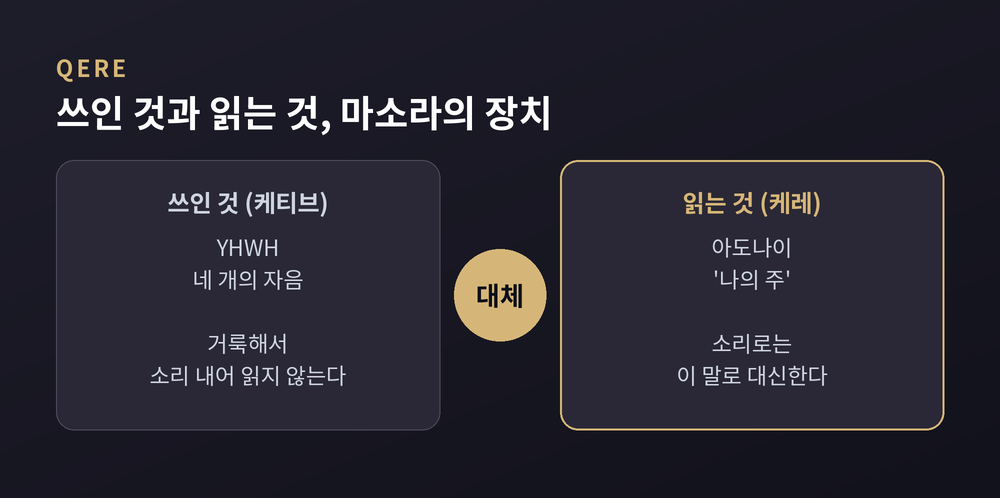
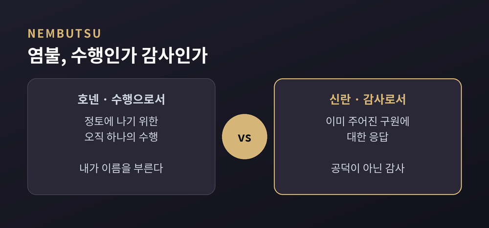
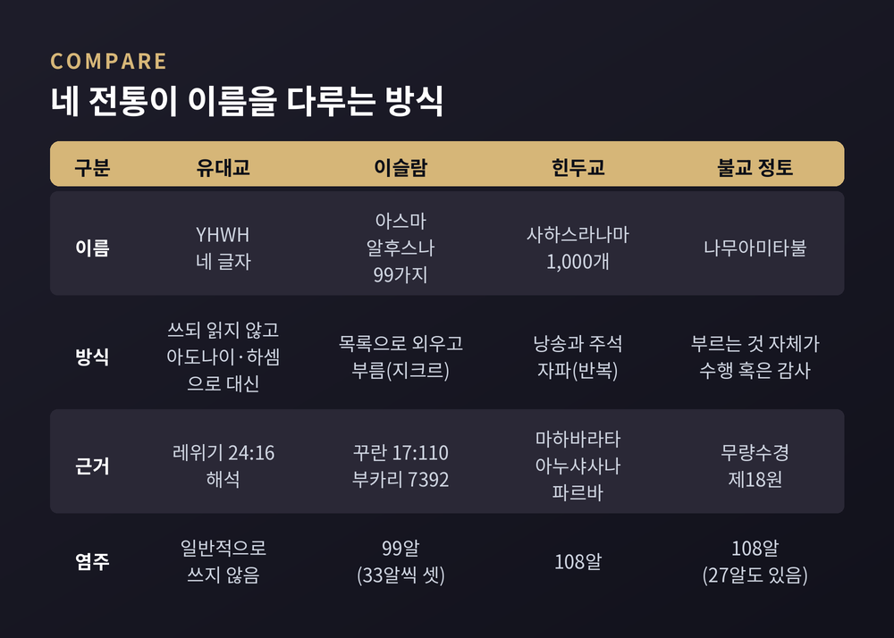

세 줄 요약
이번 글에서는 신의 이름 비교종교학을 다룹니다. 유대교의 야훼, 이슬람의 99가지 이름, 힌두교의 천 개의 이름, 불교의 염불을 나란히 놓고 '이름을 부른다는 것'이 무엇을 뜻하는지 살펴봅니다. 특정 신앙을 옹호하거나 비판하려는 글이 아니라, 종교학의 교양 차원에서 서로 다른 전통을 견주어 보는 글입니다.
히브리어 성경에는 요드-헤-바브-헤, 네 개의 자음으로 쓴 이름이 있습니다. 이를 테트라그람마톤(Tetragrammaton), 곧 '네 글자'라고 부릅니다. 학계는 이 이름의 발음을 흔히 '야훼(Yahweh)'로 복원합니다. 이름은 마소라 본문에서 5천 회를 훌쩍 넘게 나옵니다. 다만 전도서, 에스더, 아가에는 한 번도 등장하지 않습니다.
예전에는 달랐습니다. 제1성전기, 곧 기원전 586년 이전에는 일상과 축복에서 이 이름이 쓰였다고 설명됩니다. 제2성전기(기원전 516년~기원후 70년)에 들어서면 사용이 예루살렘 성전 의례로 좁혀집니다. 대제사장만 속죄일에 소리 내어 말할 수 있었고, 전승은 그 횟수를 열 번이라 전합니다.
기원전 3세기 무렵부터 발음을 피하는 관행이 퍼졌다고 서술됩니다. 이유로는 이름의 거룩함에 대한 경외, 그리고 이방인이 이름을 모독할까 하는 염려가 거론됩니다. 정확한 시작점은 자료마다 조금씩 다르게 적혀 있어 단정하기 어렵습니다. 기원후 70년 성전이 무너진 뒤에는 발음이 아예 끊겼고, 원래의 모음은 수 세기에 걸쳐 잊혔습니다.

근거로 흔히 인용되는 것은 레위기 24:16에 대한 전통적 해석입니다. 이름을 함부로 입에 올리는 일을 경계하는 구절로 읽힙니다. 미쉬나는 이름을 글자 그대로 발음하는 자에게 내세의 몫이 없다고까지 말합니다. 경계의 수위가 높았던 셈입니다.
그래서 읽을 때는 대신하는 말을 씁니다. 아도나이(Adonai, '나의 주')나 엘로힘이 그렇습니다. 일상에서는 하셈(HaShem), '그 이름'이라고 부릅니다. 오늘날 일부 유대인은 영어로도 'G-d'라고 적습니다. 이름을 쓰되 읽지 않고, 읽되 다른 말로 바꾸는 방식입니다.
그리스어 번역인 70인역도 같은 길을 걸었습니다. 이름이 나오는 자리에 일관되게 퀴리오스(Kyrios, '주')를 쓴 것입니다. 사해 두루마리 필사본에는 이름만 고대 히브리 문자로 따로 쓰거나, 점 네 개(테트라푼크타)로 대신한 사례가 있습니다. 점 넷은 발음에 대한 경계 표시로 보인다는 서술이 있습니다.
흥미로운 것은 마소라 학자들의 방식입니다. 이들은 YHWH의 자음 아래에 아도나이의 모음 부호를 붙였습니다. 쓰인 것(케티브)과 읽을 것(케레)을 구분하는 장치였습니다. 이 혼성 표기를 그대로 읽은 형태가 'Jehovah'로 알려져 있습니다.

라틴어 문헌에는 12~13세기에 이 형태가 나타납니다. 1278년과 1303년의 문헌이 언급됩니다. 영어에서는 윌리엄 틴들이 1530년 모세오경 번역의 출애굽기 6:3에서 'Iehouah'라고 적었습니다. 1840년대 이후 학계는 'Yahweh'를 더 선호합니다. 사마리아 전승, 이름에 붙는 요소, 성경에 약 50회 나오는 축약형 'Yah' 등이 근거로 듭니다.
한편 가톨릭은 2008년 전례에서 이 이름을 소리 내어 읽지 않도록 했고, 동방정교회는 70인역의 '주'를 따릅니다. 개신교 영어 성경은 소문자 크기의 대문자 'LORD'로 표기하는 경우가 흔합니다. 같은 이름을 대하는 방식이 갈래마다 달라졌습니다.
이름의 뜻을 둘러싼 논의도 있습니다. 출애굽기 3:14의 '에히예 아쉐르 에히예'는 '나는 나다', '나는 나일 자가 될 것이다', '나는 존재하는 자다'로 옮길 수 있습니다. 동사 하야('있다')의 1인칭 미완료형이라 현재와 미래를 함께 품기 때문입니다. 학자들은 이를 구체적 이름을 건네지 않는 회피로, 영원 불변에 관한 형이상학적 진술로, 혹은 자기 동일성의 표명으로 읽습니다. 어느 한 해석이 정답이라고 말하기 어렵습니다.
이슬람은 반대 방향에서 이름을 다룹니다. 아껴 두기보다 헤아리고 부릅니다. 이를 아스마 알후스나(al-Asma al-Husna), '가장 아름다운 이름들'이라 합니다. 전통적으로 99개로 셉니다. 각 이름은 자비, 힘, 정의 같은 신의 속성을 담고 있습니다.
꾸란 근거는 17:110입니다. 알라를 부르든 라흐만(자비로운 이)을 부르든 가장 아름다운 이름들은 그분의 것이라는 구절입니다. 7:180, 20:8, 59:22-24도 함께 언급됩니다. 99라는 숫자는 하디스에서 나옵니다. 아부 후라이라가 전한 사히흐 알부카리 7392는 알라께 '백에서 하나를 뺀' 아흔아홉 이름이 있고, 이를 외운 이는 천국에 들어간다고 적습니다.
그런데 목록은 하나가 아닙니다. 가장 널리 알려진 것은 9세기 알티르미디가 전한 판본인데, 티르미디 자신도 이 전승을 '드문' 것이라 평했습니다. 부카리나 이븐 마자 등이 전하는 판본은 또 다릅니다. 게다가 이븐 타이미야를 비롯한 여러 학자는 알라께 무한한 이름이 있고, 그중 일부만 꾸란과 하디스로 알려졌다고 논했습니다. 99는 상한이 아니라는 견해입니다.
이름은 실천으로 이어집니다. 지크르(dhikr)는 '기억, 상기'를 뜻하는 말로, 꾸란 33:41과 13:28이 근거로 인용됩니다. 수피즘에서는 알라의 이름들을 반복해 외우며 그 속성을 내면화하려 합니다. 염주인 미스바하는 보통 99알이고, 33알씩 세 구간으로 나뉩니다. 33알짜리를 세 번 돌리기도 합니다. 이름의 수가 손끝의 감각이 되는 셈입니다.
힌두교에는 사하스라나마(sahasranama), '천 개의 이름'이라는 장르가 있습니다. 가장 유명한 비슈누 사하스라나마는 마하바라타의 아누샤사나 파르바에 실려 있습니다. 108절에 비슈누의 이름 1,000개를 담았습니다. 서사의 틀에서는 화살 침상 위의 비슈마가 유디슈티라에게 들려주는 것으로 전해집니다.
시바 사하스라나마도 주된 판본이 같은 마하바라타에 있습니다. 링가 푸라나, 시바 푸라나 등에 최소 여덟 가지 이본이 있습니다. 랄리타 사하스라나마는 브라흐만다 푸라나에 들어 있고, 하야그리바가 현자 아가스티야에게 전하는 형식입니다. 전승은 여덟 바그데비가 여신 랄리타의 명을 받아 지었다고 합니다. 1,000개의 이름이 반복 없이 이어진다는 점이 특징으로 꼽힙니다.
천 개라는 숫자는 신을 하나의 이름에 가두지 않고 여러 얼굴로 펼쳐 보이려는 방식으로 읽을 수 있습니다. 다만 이 해석은 종교학의 정리이지, 각 전통이 한 목소리로 내놓은 설명은 아닙니다. 실제로 같은 비슈누의 이름들을 두고 아디 샹카라는 불이론 베단타의 입장에서, 12세기의 파라샤라 바타는 한정불이론의 입장에서 주석했습니다. 이후 이원론의 비디야디라자 티르타, 18세기의 발라데바 비디야부샤나도 저마다의 철학으로 읽었습니다. 이름 목록은 같고, 읽는 눈이 학파마다 다릅니다.
낭송에도 결이 있습니다. 랄리타의 경우 찬가 형식이나 이름을 하나씩 부르는 나마발리 형식으로 외우고, 보통 네 개의 명상 시구가 앞섭니다. 이름 반복의 실천은 자파(japa)라 합니다. 소리 내어 하는 바이카리, 속삭이는 우팜슈, 쓰면서 하는 리키타로 나뉩니다. 염주의 표준은 108알입니다. 전통에 따라서는 비슈누 사하스라나마를 매일 헌신으로 읽는 이가 명성, 재산, 지식, 즐거움을 얻는다고도 말합니다.
불교에서는 이름이 수행의 도구가 됩니다. 염불(念佛, 중국어 니엔포, 일본어 넨부쓰)은 산스크리트 붓다누스므리티, '부처를 기억함'에서 왔습니다. 처음에는 부처를 마음에 떠올리는 고전적인 수행이었습니다. 이것이 점차 '부처의 이름을 부른다'는 칭명의 뜻을 함께 갖게 되었습니다.
중국 정토 사원에서는 '나무아미타불', 일본 정토종과 정토진종에서는 '나무아미다불(Namu Amida Butsu)'을 외웁니다. 아미타불께 귀의한다는 뜻이며, 아미타는 무량한 빛과 수명을 가리킵니다. 4~5세기의 혜원은 반주삼매경에 근거해 아미타불을 눈앞에 떠올리는 명상을 닦았습니다. 7세기의 선도는 이름을 소리 내어 부르는 칭명을 정토 수행의 중심에 놓았습니다. 근거로는 무량수경 제18원이 인용됩니다. 열 번만 생각해도 자신의 정토에 나게 하겠다는 서원입니다.

일본에서 이 흐름은 더 갈라집니다. 호넨(1133–1212)은 염불을 오직 하나의 수행으로 강조해 정토종을 열었습니다. 제자 신란(1173–1263)은 정토진종에서 염불을 공덕을 쌓는 행위가 아니라, 이미 주어진 구원에 대한 감사의 표현으로 재해석했습니다. 잇펜(1239–1289)은 믿음의 유무와 상관없이 아미타불의 힘으로 염불이 작동한다고 보았습니다.
같은 '이름 부르기'가 누구에게는 쌓아 올리는 수행이고, 누구에게는 받은 것에 대한 응답입니다. 이 갈림은 정토 전통 안에서도 하나로 정리되지 않습니다. 염불이 널리 퍼진 배경으로는 가르침이 흐려지고 스스로 정진하기 어렵다고 느끼던 말법의 시대 인식이 거론됩니다. 한국에서는 통일신라 시기에 퍼졌다고 서술되고, 방식은 염주를 쓰는 암송에서 걸으며 하는 염불, 호흡에 맞추는 염불까지 다양합니다.
지금까지의 내용을 표로 정리하면 이렇습니다. 아래 비교는 종교학이 편의상 세운 틀이며, 각 전통이 스스로 내리는 설명과는 구분해야 합니다.

유대교는 이름을 쓰되 소리를 절제합니다. 이슬람은 이름을 목록으로 헤아려 부르고, 그 수가 99에 한정되지 않는다는 견해도 있습니다. 힌두교는 천 개의 이름으로 신의 여러 면을 낭송하고 학파별 주석이 붙습니다. 불교 정토 전통은 부처의 이름을 부르는 행위 자체를 수행 혹은 감사의 표현으로 삼습니다.
이 비교가 영향 관계를 뜻하지는 않습니다. 네 전통은 각자의 경전과 역사 속에서 이름을 다루어 왔고, 서로 어떻게 영향을 주고받았는지는 이 글에서 다루지 않습니다.
정리하면 이렇습니다. 침묵으로 이름을 지키는 쪽도, 목록으로 이름을 헤아리는 쪽도, 천 개로 펼치는 쪽도, 소리 내어 부르는 쪽도 있습니다. 방식은 정반대처럼 보이지만, 이름을 가볍게 다루지 않는다는 점은 닮아 있습니다.
“이름을 다루는 방식에는 그 전통이 거룩함을 대하는 태도가 담겨 있다.”
저는 이 한 줄이 네 전통을 읽는 가장 쓸 만한 열쇠라고 생각합니다.
누군가의 이름을 부른다는 일이 무엇을 뜻하느냐고 물으신다면, 저는 이 네 가지 답이 모두 그 물음의 서로 다른 면을 비추고 있다고 답하겠습니다.